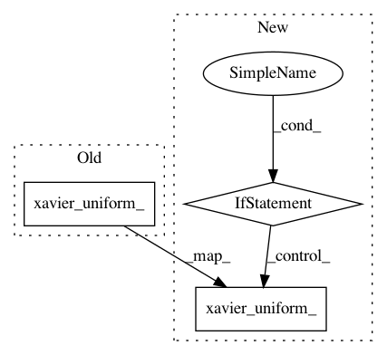

1e39951b371238b26783b31dd5101eb334c23412,kraken/lib/layers.py,ActConv2D,resize,#ActConv2D#,703
Before Change
idx = torch.tensor([x for x in range(old_shape) if x not in del_indices])
weight = self.co.weight.index_select(0, idx)
rweight = torch.zeros((output_size - weight.size(0), weight.size(1), weight.size(2), weight.size(3)))
torch.nn.init.xavier_uniform_(rweight)
weight = torch.cat([weight, rweight], dim=0)
bias = self.co.bias.index_select(0, idx)
bias = torch.cat([bias, torch.zeros(output_size - bias.size(0))])
self.co = torch.nn.Conv2d(self.in_channels, self.out_channels, self.kernel_size,
After Change
idx = torch.tensor([x for x in range(old_shape) if x not in del_indices])
weight = self.co.weight.index_select(0, idx)
rweight = torch.zeros((output_size - weight.size(0), weight.size(1), weight.size(2), weight.size(3)))
if rweight.shape[0] > 0:
torch.nn.init.xavier_uniform_(rweight)
weight = torch.cat([weight, rweight], dim=0)
bias = self.co.bias.index_select(0, idx)
bias = torch.cat([bias, torch.zeros(output_size - bias.size(0))])
self.co = torch.nn.Conv2d(self.in_channels, self.out_channels, self.kernel_size,
In pattern: SUPERPATTERN
Frequency: 3
Non-data size: 3
Instances
Project Name: mittagessen/kraken
Commit Name: 1e39951b371238b26783b31dd5101eb334c23412
Time: 2020-07-27
Author: mittagessen@l.unchti.me
File Name: kraken/lib/layers.py
Class Name: ActConv2D
Method Name: resize
Project Name: thunlp/OpenKE
Commit Name: 0ab6621dcd3e9cd97a257ea2d8d05b23bfba8609
Time: 2020-04-08
Author: thu.hanxu13@gmail.com
File Name: openke/module/model/HolE.py
Class Name: HolE
Method Name: __init__